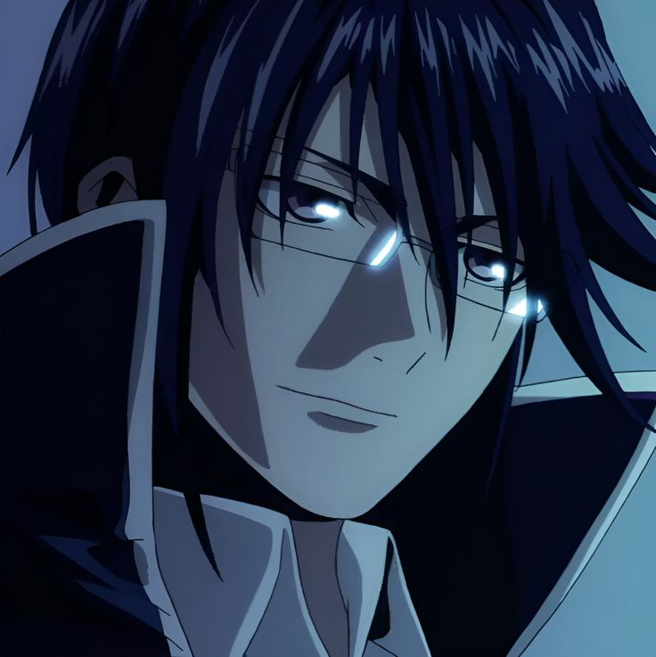
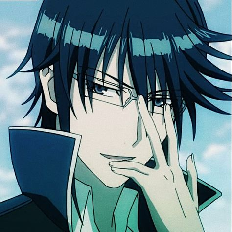
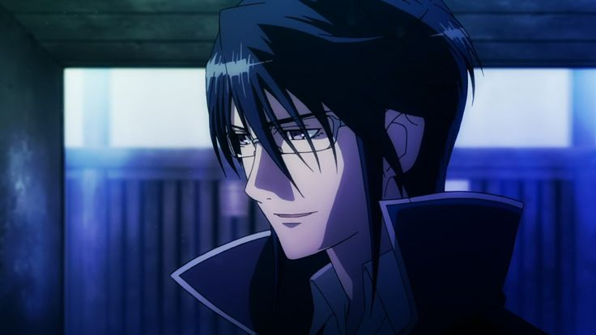

Reisi Munakata
"Rey Azul"
Biografía

Biografía
- Nombre completo: Reisi Munakata
- Anime: K Project
- Edad: Aproximadamente 25-30 años
- Ocupación: Rey Azul, Capitán de Scepter 4
- Afiliación: Scepter 4
- Altura: 1.85 m
- Color de clan: Azul
- Personalidad: Calmado, lógico, diplomático
Habilidades y Equipo
- Poderes del Rey Azul: Control sobre la energía de tipo "azul", que representa el orden y la disciplina.
- Espadas de restricción: Crea espadas de energía azul que pueden sellar poderes o restringir movimiento.
- Combate con katana: Maneja una katana de forma experta, tanto en técnicas físicas como con energía.
- Equipo: Traje azul ceremonial, gafas, katana, y su sello de Rey Azul.
Galería


Curiosidades
- Le encanta leer libros y resolver crucigramas.
- Suele hablar de forma muy formal incluso con sus subordinados.
- Tiene una relación peculiar y tensa con el Rey Rojo anterior, Mikoto Suoh.
- Su seiyuu en japonés es Tomokazu Sugita.
Enemigos
- Mikoto Suoh: El anterior Rey Rojo, su opuesto tanto en poder como en filosofía.
- JUNGLE (Color Verde): Organización anarquista liderada por el Rey Verde.
- El Clan Colorless: Representa el caos y la pérdida de identidad.